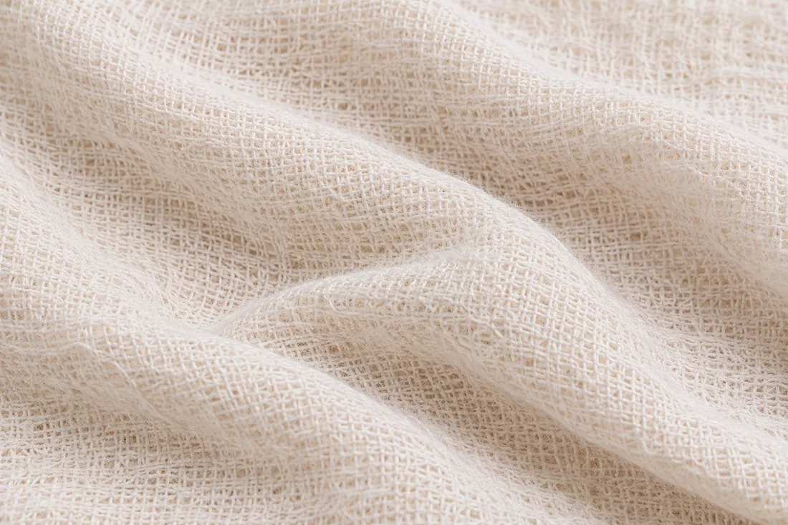
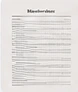
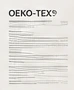
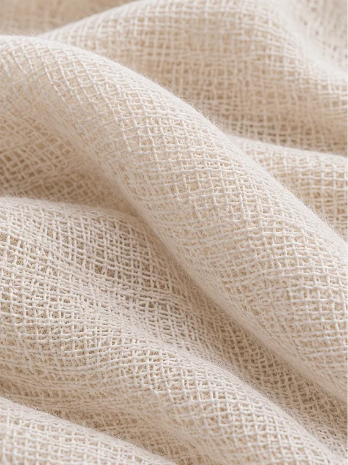
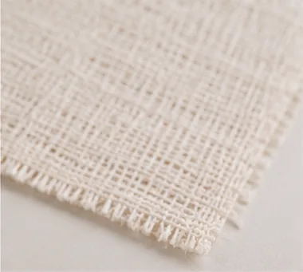
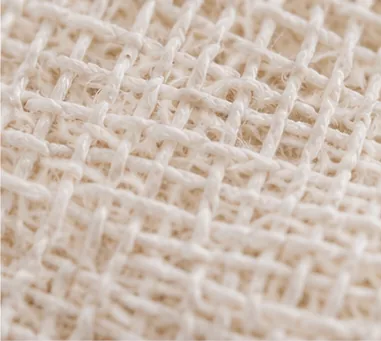
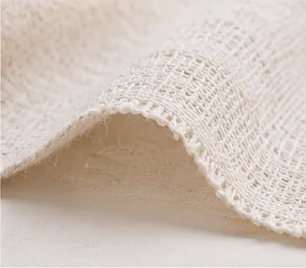

Inbox
 Filo
to me
9:41 AM
Filo
to me
9:41 AM
New material shared:
Bacterial Cellulose (BC-001)
Hi Priya,
Here’s the technical file for Bacterial Cellulose (BC-001). You can view the full material record, including specs, test reports and certifications, on Filo.

Bacterial Cellulose BC-001Or copy this link:
https://filo.app/materials/BC-001
AA
filo.app
Bacterial Cellulose
Shared with youMaterial summary
A lightweight, biodegradable material made from bacterial cellulose with a smooth, soft handfeel.
Key properties (from supplier)
- Composition
- 100% bacterial cellulose
- Weight
- 120 gsm
- Width
- 145 cm
- Thickness
- 0.3 mm
- Heat tolerance
- Max. 60°C
- Supplier
- Modern Synthesis
Supplier documents

Technical datasheet.pdf2.4 MB
Lab test report.pdf1.8 MB

OEKO-TEX certificate.pdf1.2 MB
Material photos.zip12 MB
i
Still needs verification
These details are not yet confirmed and may need to be tested.
- Seam performance
- Not tested
- Pilling resistance
- Not tested
- Colour fastness
- Not tested
- Compatibility
- Not tested
- Care instructions
- Not tested
- End-of-life
- Not tested
Material photos




+4About the supplier
MS
Modern SynthesisBiomaterials innovator